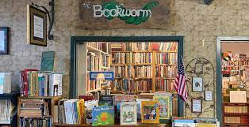

The Bookworm: A better book store
"Old books are best--how tale and ryhme
Float with us down the stream of time!"
--Clarence Urmy,Old Songs are Best
The bookworm Bookshop
1345 Applewood Dr
Springfield, CA 94325
(415)555-0034
Contents
About the Bookworm Bookshop
Since 1933, The Bookworm Bookshop has offered rare and hard-to-find titles for the discerning reader. The
Bookworm offers
- Friendly knownlegdeable, and courteous help
- Free coffee and juice for our customers
- A well-lit reading room so you can "try before you buy"
- Four friendly cats: Esmerelda, Catherine, Dulciena and Beatrice
Our hours are 10 am to 9 pm weekdays, noon to 7 on weekends.
Back to contents | Back to top
Recent Titles (as of July 11, 2012)
Back to contents | Back to top
Upcomming Events
- The Wednesday Evening Book Review meets, appropiately, on Wednesday evening at 7 pm for coffee
and a round-table discussion. Call the Bookworm for information on joining the group
- The Children's Hour happens every Saturday at 1 pm and includes reading, games, and other activities.
Cookies and milk are served.
- Carole Fenney will be at the Bookworm on Sunday, January 19, to read from her book of poems Spiders
in the Web.
- The Bookworm will be closed March 1st to remove a family of bats that has nesten in the tower. We like
the company, but not the mess they leave behind!
Back to contents | Back to top
Last Updated: July 11, 2012
Webmaster: Laura Lemay lemay@bookworm.com
C copyright 2012 the Bookworm
Connect to our sister concern Book Store Exlporer